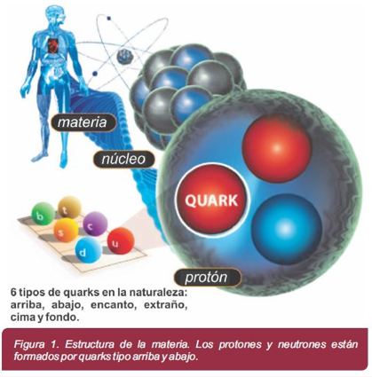
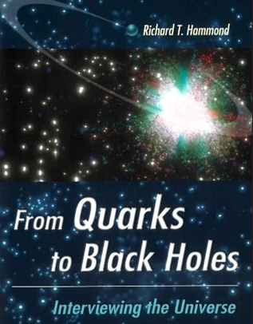

Análisis de las Condiciones Sociales, Económicas, Culturales y Políticas en el Descubrimiento de los Quarks (1945-1970)
La física de partículas no surgió en el vacío. Su explosión en la segunda mitad del siglo XX está profundamente entrelazada con el contexto global de la Guerra Fría. La rivalidad entre EE.UU. y la URSS, si bien era una carrera armamentística, también se tradujo en una carrera científica sin precedentes. La necesidad de superioridad tecnológica impulsó una financiación masiva a la investigación básica, creando los laboratorios nacionales como Fermilab en Estados Unidos.
Como contraparte, en la devastada Europa de postguerra, surgió una respuesta distinta: la cooperación. La necesidad de reconstruir y evitar nuevos conflictos llevó a la creación del CERN (Consejo Europeo para la Investigación Nuclear), un proyecto audaz que demostró que la ciencia podía unir a naciones antiguamente enfrentadas. Este contexto europeo de postguerra fue el caldo de cultivo perfecto para una empresa científica colaborativa a una escala nunca antes vista.
🌍 CONTEXTO SOCIAL: La Física de Partículas entra en el imaginario colectivo
La Era de la Divulgación Masiva: La década de 1960 no solo trajo la contracultura, sino también un hambre pública por el conocimiento científico. La serie de televisión "Cosmos" de Carl Sagan (años 80) es el ejemplo cumbre, pero antes, revistas como Scientific American y New Scientist hicieron accesibles conceptos como el "Modelo de Quarks" y el "Zoo de Partículas". Programas de la BBC y documentales públicos explicaban cómo los aceleradores de partículas eran los "microscopios" más potentes del mundo, despertando la imaginación de una generación.

El Científico como Rockstar: Figuras como Murray Gell-Mann no solo eran respetadas en sus campos, sino que se convertían en intelectuales públicos. Gell-Mann, un políglota y erudito en historia natural, encarnaba al "científico renacentista" moderno. Su disputa amistosa pero firme con George Zweig por la paternidad del modelo de quarks añadió un elemento dramático y humano a la ciencia, mostrándola como una actividad hecha por personas con pasiones y rivalidades.
Del Laboratorio a la Cafetería: Conceptos como la "libertad asintótica" (que describe cómo los quarks se comportan cuando están muy juntos vs. muy separados) y la "reclusión" (que explica por qué no podemos observar un quark libre) se convirtieron en metáforas utilizadas en otros campos, desde la sociología hasta la economía, simbolizando fuerzas que son fuertes a distancia pero débiles en la proximidad, o ideas que no pueden existir de forma aislada.
El Legado para las Nuevas Generaciones: Este periodo creó un "efecto Sagan": inspiró a miles de jóvenes a seguir carreras en STEM (Ciencia, Tecnología, Ingeniería y Matemáticas). La imagen del detector CMS o ATLAS en el LHC se convirtió en un icono de lo que la colaboración humana a gran escala puede lograr, un símbolo de esperanza y capacidad técnica en un mundo a menudo dividido.
💡 Lo más importante:
La sociedad pasó de una visión de la física como un campo esotérico y aterrador (asociado a la bomba atómica) a una disciplina emocionante que respondía preguntas fundamentales sobre la existencia. Los quarks se convirtieron en los "átomos" de la era moderna, los bloques de construcción de una nueva cosmovisión.
💸 CONTEXTO ECONÓMICO: La Gran Ciencia y su Ecosistema de Innovación
El desarrollo de la física de partículas, que culminó con la construcción de megaproyectos como el LHC, requirió de una capacidad económica y una escala de colaboración sin precedentes.
El Modelo de "Big Science": La posguerra vio el nacimiento de la "Gran Ciencia". Proyectos como el LHC, con un coste de miles de millones de dólares y construido entre 1998 y 2008, son el epítome de este modelo. Este acelerador, el más grande y energético del mundo, fue el resultado de la colaboración de más de 10,000 científicos e ingenieros de cientos de universidades y laboratorios en más de 100 países.

Colaboración vs. Competencia: Mientras que en la Guerra Fría primaba la competencia nacional, el LHC representa un modelo de colaboración global posguerra fría. El CERN, su institución anfitriona, es un ejemplo de cooperación científica que trasciende las fronteras políticas. En las últimas décadas, el porcentaje de publicaciones científicas con coautoría internacional ha crecido sustancialmente, reflejando esta globalización de la ciencia.
Dificultades en el Bloque Oriental: Polonia y otros países del bloque soviético enfrentaron graves problemas económicos, incluyendo escasez y una deuda externa creciente. A pesar de esto, los científicos de estos países buscaron formas de participar en la empresa científica global. La membresía de Polonia en el CERN, incluso durante la época comunista, le permitió acceder a proyectos de vanguardia y formar a sus investigadores en una red científica internacional.
La "Marca País" Científica: Para países como Suiza y sus vecinos que albergan el CERN, ser el centro mundial de la física de partillas se convirtió en un activo de "marca país" invaluable. Atrae a los mejores cerebros del mundo, fomenta la inversión en educación de calidad y posiciona a la nación como un líder en innovación, lo que a su vez atrae más inversiones de alta tecnología.
⚖️ CONTEXTO POLÍTICO: La Diplomacia de los Aceleradores
Ciencia como Arma de Soft Power: Durante la Guerra Fría, mientras la carrera armamentística demostraba poderío militar, la carrera por descubrir nuevas partículas demostraba superioridad intelectual y cultural. El modelo de quarks, propuesto en 1964 por Gell-Mann (estadounidense) e independientemente por Zweig (que entonces trabajaba en el CERN), se convirtió en un trofeo en esta lucha silenciosa.

El CERN: Un Parlamento para la Ciencia: Fundado en 1954, el CERN fue un experimento político tan audaz como científico. Naciones que se habían enfrentado en dos guerras mundiales (Francia, Alemania, Reino Unido) se unían para construir máquinas que superaban las capacidades de cualquier superpotencia en solitario. El laboratorio se convirtió en un espacio donde la diplomacia se ejercía a través de colaboraciones científicas y publicaciones conjuntas, sentando un precedente para la Unión Europea.
El Puente sobre el Telón de Acero: Aunque con tensiones, existió colaboración limitada entre científicos soviéticos y occidentales en física de partículas. Después de la Guerra Fría, este canal se amplió dramáticamente, integrándose a científicos rusos en proyectos como el LHC. Esto muestra cómo la ciencia puede actuar como un "puente diplomático" incluso en los momentos de mayor tensión política.

La Geopolítica del Conocimiento en el Siglo XXI: El descubrimiento del bosón de Higgs consolidó el liderazgo europeo en física de partículas, un campo que EE.UU. había dominado durante décadas. Esto llevó a un replanteamiento estratégico en Washington, con debates sobre la construcción de un "colisionador estadounidense" para recuperar la primacía. Hoy, la entrada de China como un actor principal, con planes para su propio colisionador gigante, está reconfigurando el mapa geopolítico de la ciencia fundamental.
💡 Lo más importante:
Los aceleradores de partículas se convirtieron en instrumentos de política exterior. La colaboración para construir el LHC demostró que, ante preguntas universales, las naciones pueden suspender sus diferencias y trabajar juntas, creando un modelo de gobernanza global basado en el conocimiento compartido.
🎨 CONTEXTO CULTURAL: Los Quarks y la Reinvención de la Realidad
La Poética de lo Infinitamente Pequeño: El nombre "quark" es quizás el legado cultural más perdurable. Al tomarlo de James Joyce, Gell-Mann inyectó poesía y ambigüedad en el corazón de la física. Ya no eran partículas con nombres técnicos secos (como "muón"), sino entidades con un nombre lúdico, literario y misterioso. Esto influyó en cómo la cultura veía la ciencia: no como un conjunto de reglas frías, sino como una aventura creativa.

El "Zoo de Partículas" y la Cultura Pop: La proliferación de partículas (piones, kaones, etc.) antes del modelo de quarks, el llamado "zoo de partículas", capturó la imaginación del público. Se parecía a un bestiario fantástico o a un panteón de dioses exóticos con propiedades extrañas. Esta idea de un universo rebosante de "criaturas" invisibles influenció la ciencia ficción, desde "Star Trek" (con su technobabble) hasta la novela "El Quark y el Jaguar" del propio Gell-Mann, que conecta lo simple con lo complejo.
Arte y Ciencia Colisionan: Artistas como Julian Voss-Andreae crean esculturas basadas en la estructura de proteínas y la forma de los orbitales cuánticos, inspirados indirectamente por esta nueva visión de la materia. La música (como la obra "Black Holes and Quarks" de varios compositores) y el arte digital han encontrado en la danza de los quarks y gluones una fuente inagotable de formas, colores y conceptos.
Filosofía y una Nueva Realidad: El modelo de quarks forzó un cambio filosófico. La materia ya no era sólida y predecible. El mundo subatómico era un hervidero de partículas virtuales, donde la energía y la materia se intercambiaban constantemente. Conceptos como que los quarks no pueden ser observados en solitario (confinamiento) desafiaron la noción clásica de lo que significa "existir". Se abrió la puerta a interpretaciones filosóficas que vinculan la física cuántica con el idealismo y la interconexión de todas las cosas.
💡 Lo más importante:
El descubrimiento de los quarks no solo cambió los libros de texto de física; cambió la cultura profunda del siglo XX. Introdujo la idea de que la realidad fundamental es extraña, contraintuitiva y profundamente interconectada, inspirando una nueva ola de pensamiento que permea el arte, la literatura y nuestra comprensión de nuestro lugar en el universo.